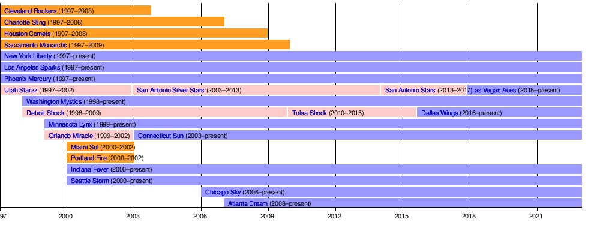

The W
Composed of twelve teams, all based in the United States. The league was founded on April 22, 1996, as the women's counterpart to the National Basketball Association (NBA), and league play started in 1997. The regular season is from May to September, with the All Star game being played midway through the season in July (except in Olympic years) and the WNBA Finals at the end of September until the beginning of October. It originally began with just eight teams: the Charlotte Sting, Cleveland Rockers, Houston Comets, and New York Liberty in the Eastern Conference; and the Los Angeles Sparks, Phoenix Mercury, Sacramento Monarchs, and Utah Starzz in the West. Two teams were added in 1998 (Detroit and Washington), and two more were added in 1999 (Orlando and Minnesota), bringing the number of teams in the league up to the current twelve. There have been a total of 18 franchises throughout the WNBA, along with multiple moves and name changes. There are 6 teams that are "sister" teams of the NBA. They are the New York Liberty (Brooklyn Nets), Indiana Fever (Indiana Pacers), Los Angeles Sparks (Los Angeles Lakers), Minnesota Lynx (Minnesota Timberwolves), Phoenix Mercury (Phoenix Suns), and Washington Mystics (Washington Wizards). The Seattle Storm used to be a sister to the Seattle SuperSonics, but was sold to another group before the SuperSonics rebranded to the Oklahoma City Thunder.
As shown above, the Liberty, Sparks, and Mercury have been amongst the W since the beginning, with no changes made to their respective franchises. The four other original teams (Cleveland Rockets, Charlotte Sting, Houston Comets, Sacramento Monarchs)were folded. Then the Mystics arrive, followed by the Lynx. Currently the Lynx and the Storm are tied for the most amount of championships won, with them holding four a piece. The Sparks and Mercury are tied at seconds with them having won 3. The Fever, Aces, Mystics, and Sky all have only won one championship, while the Liberty, Sun, and Atlanta Dream have won none. However, all of the teams have made it to the championship at least once. The Storm is the only team to appear and and not lose.